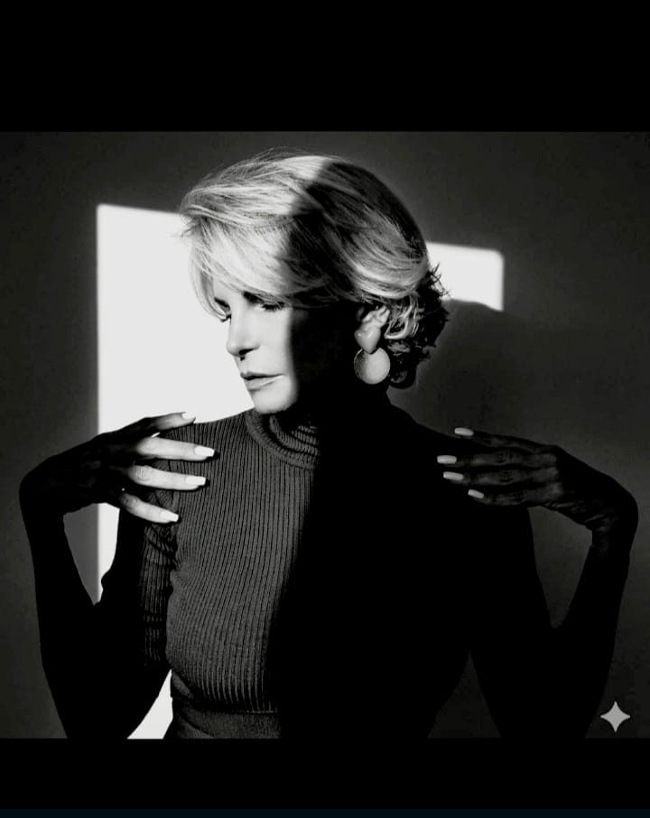
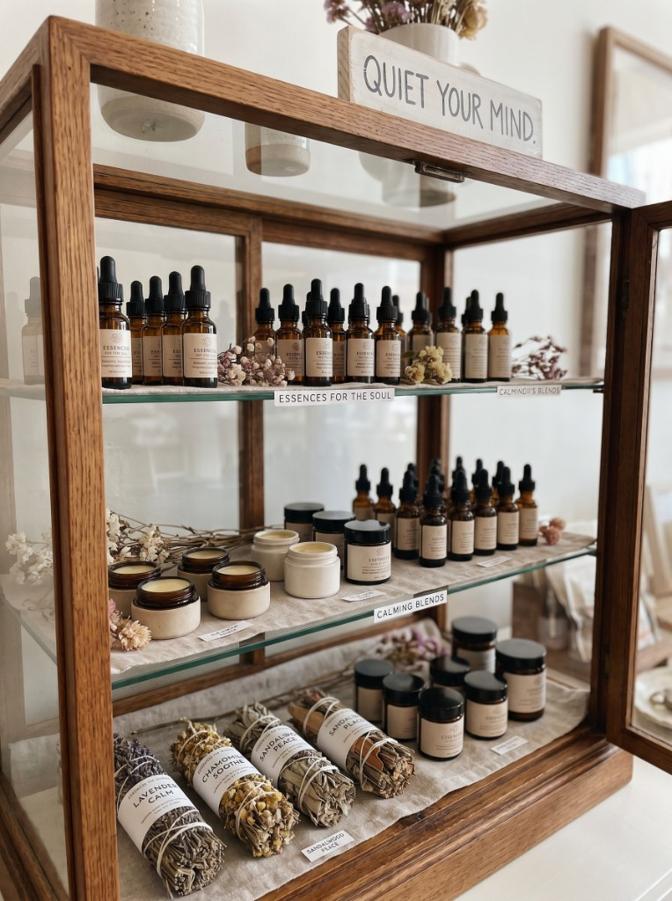

A alma por trás das janelas
Sou exploradora de sentimentos e guardiã de pausas. Acredito que cada olhar carrega uma história — e que a beleza mora nos detalhes que quase passam despercebidos.
Neste espaço, imagem e palavra conversam em silêncio. Uma direção de arte feita para quem reconhece presença e o refinamento do essencial.
12
anos de olhar
∞
pausas guardadas
Presença · Refinamento · Identidade
Janelas da Alma

Luz & Sombra
Admit One
Janelas da Alma
Presença · Pausa · Olhar
Três portas para
a contemplação
Cada caminho convida a uma forma diferente de olhar. Escolha por onde entrar — ou deixe-se guiar pelo silêncio entre uma página e outra.
Horizontes da minha mente
Reflexões que expandem o olhar interior — onde pensamento e imaginação se encontram em pausa.
Explorar
Pensadores
Vozes que atravessam o tempo e convidam à pausa — citações, ensaios e encontros.
Explorar
Essências para a alma
Fragrâncias de sentido — textos, sons e imagens curados para contemplar devagar.
Explorar“Não se trata de consumir conteúdo — trata-se de habitar o instante com atenção plena.” Manifesto · Janelas da AlmaAprofunde-se